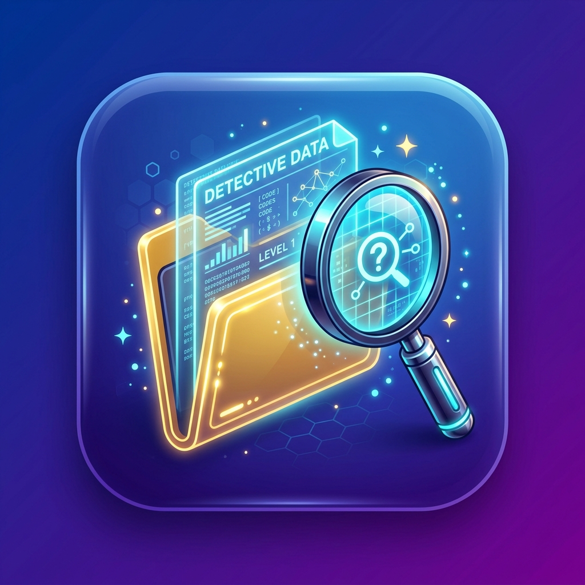

Game Interaktif Kelas 7 — Antarmuka GUI, Folder & File (Edisi 1-Klik Cepat)
🎯 Sangat Mudah & Ramah Pemula! Cukup baca misi di layar, lalu klik langsung pilihan jawaban yang benar. Tidak perlu klik kanan dan tidak perlu mengetik!
Tantangan telah selesai! Kamu bisa bermain lagi untuk mengasah kemampuanmu.
Catatan performa setiap sesi permainan
| No | Sesi Permainan | Skor Benar | Akurasi | Durasi Terpakai | Predikat |
|---|
Strategi 1 Laptop untuk 39 Siswa (Pertemuan 1 TIK SMP)
Banyak siswa kelas 7 belum terbiasa dengan mouse/touchpad laptop (sering bingung klik kanan vs klik kiri, atau kesulitan mengetik cepat). Format 1-Klik Kiri pada tombol jumbo ini memastikan siswa tidak frustrasi, tidak membuang waktu, dan fokus 100% pada pemahaman konsep logika file & folder.